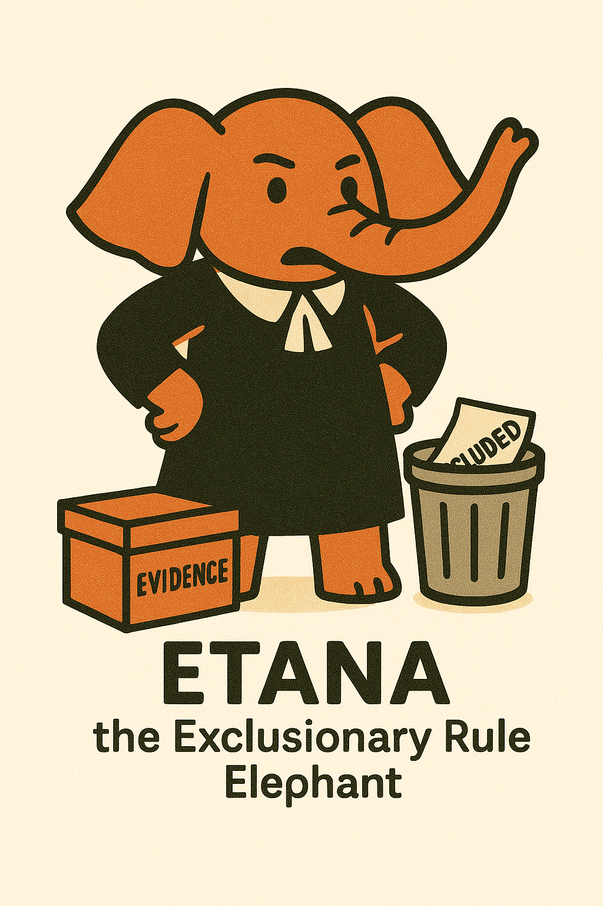

Introduction to Criminal Procedure
Criminal procedure governs the process by which the government investigates, prosecutes, and adjudicates alleged violations of criminal law. Unlike substantive criminal law, which defines crimes and penalties, criminal procedure focuses on the constitutional and statutory rules that govern how the government must conduct itself when enforcing criminal laws.
The Stakes in Criminal Procedure
Criminal procedure involves balancing competing interests:
- Individual Liberty: Freedom from unreasonable government intrusion
- Law Enforcement: Government's need to effectively investigate and prosecute crime
- Privacy: Protection of personal information and spaces
- Due Process: Fairness and reliability in the adjudicative process
- Public Safety: Protection of the community from criminal activity
The rules of criminal procedure determine when and how the government may search, seize, arrest, interrogate, try, and punish individuals. These rules fundamentally shape the relationship between the government and its citizens in the criminal justice context.
Constitutional Framework
The U.S. Constitution provides the fundamental framework for criminal procedure. Key constitutional provisions include:
- Fourth Amendment: Prohibits unreasonable searches and seizures, requires probable cause for warrants
- Fifth Amendment: Protects against double jeopardy and self-incrimination, guarantees due process
- Sixth Amendment: Guarantees right to counsel, trial by jury, confrontation of witnesses, and other trial rights
- Eighth Amendment: Prohibits excessive bail, excessive fines, and cruel and unusual punishment
- Fourteenth Amendment: Applies (incorporates) most Bill of Rights protections to the states via Due Process Clause
The Supreme Court has interpreted these constitutional provisions over time, developing a complex body of case law that defines the scope and application of these rights in various contexts.
flowchart TD
start["CONSTITUTIONAL FRAMEWORK
OF CRIMINAL PROCEDURE"] --> investigate["INVESTIGATION PHASE
Primary Amendment: Fourth
Key Rights: Freedom from unreasonable
searches and seizures"]
investigate --> arrest["ARREST & CHARGING PHASE
Primary Amendments: Fourth & Fifth
Key Rights: Probable cause for arrest,
protection against self-incrimination"]
arrest --> pretrial["PRETRIAL PHASE
Primary Amendments: Fifth & Sixth
Key Rights: Due process, right to counsel,
discovery, bail considerations"]
pretrial --> trial["TRIAL PHASE
Primary Amendment: Sixth
Key Rights: Jury trial, confrontation,
compulsory process, effective counsel"]
trial --> appeal["POST-TRIAL & APPEALS
Primary Amendments: Fifth, Eighth, Fourteenth
Key Rights: Protection against double jeopardy,
proportional punishment, due process in appeals"]
classDef phase fill:rgba(131, 188, 169, 0.2),stroke:#83BCA9,stroke-width:2px
class start,investigate,arrest,pretrial,trial,appeal phase
Key Constitutional Amendments in Criminal Procedure
Fourth Amendment
"The right of the people to be secure in their persons, houses, papers, and effects, against unreasonable searches and seizures, shall not be violated, and no Warrants shall issue, but upon probable cause, supported by Oath or affirmation, and particularly describing the place to be searched, and the persons or things to be seized."
- Protects against unreasonable government searches and seizures
- Requires warrants to be based on probable cause and to specifically describe what's being searched or seized
- Contains numerous exceptions and complex interpretations regarding what constitutes a "search" or "seizure"
Fifth Amendment
"No person shall be held to answer for a capital, or otherwise infamous crime, unless on a presentment or indictment of a Grand Jury, except in cases arising in the land or naval forces, or in the Militia, when in actual service in time of War or public danger; nor shall any person be subject for the same offence to be twice put in jeopardy of life or limb; nor shall be compelled in any criminal case to be a witness against himself, nor be deprived of life, liberty, or property, without due process of law; nor shall private property be taken for public use, without just compensation."
- Protects against self-incrimination ("right to remain silent")
- Prohibits double jeopardy (being tried twice for the same offense)
- Requires due process of law before deprivation of life, liberty, or property
- Requires grand jury indictment for federal felony prosecutions
Sixth Amendment
"In all criminal prosecutions, the accused shall enjoy the right to a speedy and public trial, by an impartial jury of the State and district wherein the crime shall have been committed, which district shall have been previously ascertained by law, and to be informed of the nature and cause of the accusation; to be confronted with the witnesses against him; to have compulsory process for obtaining witnesses in his favor, and to have the Assistance of Counsel for his defence."
- Guarantees right to jury trial in criminal cases
- Ensures right to confront witnesses (Confrontation Clause)
- Provides right to counsel at critical stages of prosecution
- Requires speedy and public trial
- Guarantees notice of charges
Meet Your Study Guides
Criminal procedure involves complex doctrines and intricate legal tests that can be challenging to understand and remember. To make learning more engaging and memorable, we've created a set of character mascots that embody key criminal procedure principles.
Felipe the Fourth Amendment Fox
The guardian of privacy rights and protection against unreasonable searches and seizures
Miguel the Miranda Macaw
The communicator of rights and protector against self-incrimination

Etana the Exclusionary Rule Elephant
The gatekeeper who blocks improperly obtained evidence
Waru the Warrant Exception Quokka
The navigator of the complex maze of warrant exceptions
Tulio the Terry Stop Tapir
The overseer of brief investigative detentions and pat-downs
Each of these characters will appear throughout the guide to help illustrate important concepts and make abstract legal principles more concrete and memorable.
Structure of Criminal Procedure Course
This guide covers these key areas of Criminal Procedure:
- Fourth Amendment: Search & Seizure
- What constitutes a "search" or "seizure"
- The warrant requirement and probable cause
- Exceptions to the warrant requirement
- Stop and frisk doctrine
- Remedies for Fourth Amendment Violations
- The exclusionary rule
- Fruit of the poisonous tree doctrine
- Exceptions to the exclusionary rule
- Standing requirements
- Fifth Amendment: Interrogations & Confessions
- Miranda warnings
- Custody and interrogation analysis
- Voluntariness doctrine
- Exceptions to Miranda
- Sixth Amendment: Right to Counsel
- When the right attaches
- Massiah doctrine
- Effective assistance of counsel
- Right to appointed counsel
This guide is organized to follow the analytic frameworks used in criminal procedure, with flowcharts depicting the step-by-step analysis courts use when evaluating constitutional claims. Each section includes key cases that established the doctrine, along with their facts and reasoning, to help connect abstract principles to concrete applications.